Kako koristiti Parkomat prototip
Platforma na kojoj vlasnici iznajmljuju svoje prazno parking mjesto, garažu ili dvorište, a vozači ga pronađu na mapi, rezervišu i plate online. Banja Luka, cijene u KM, provizija platforme 15 %.
1Šta vidite na linku
Na jednom linku je prikaz sve tri platforme koje bi Parkomat imao:
- iPhone aplikacija, sa izgledom i navikama iOS-a (Apple Pay, donji meni, veliki naslovi).
- Android aplikacija, sa izgledom Androida (Google Pay, plutajuće dugme za dodavanje).
- Web za računar i tablet: pretraga sa mapom, domaćinski dio i admin za upravu platforme.
Sve tri dijele iste podatke. Ako rezervišete mjesto na telefonu, ta uplata se odmah vidi u adminu na webu, a domaćin je vidi u svojoj zaradi.
2Kako otvoriti i prebacivati uređaje
Na računaru
Gore je traka sa izborom iPhone Android Web. Za iPhone i Android na sredini ekrana vidite telefon i u njemu klikate kao prstom. Desno gore je Reset demo, koji vraća podatke na početak.
Na telefonu
Link se otvara kao prava aplikacija, preko cijelog ekrana i bez ikakvih dodataka, tačno kako bi izgledala instalirana. Na Androidu se sam otvara Android izgled, na iPhoneu iOS izgled. Uređaj se mijenja u Profil, u kartici Prototip. Tu su i dugme za web i admin i link na ovo uputstvo.
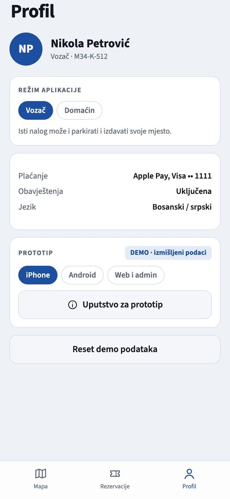
3Vozač: pronađi mjesto
Početni ekran je mapa Banje Luke sa slobodnim mjestima. Na vrhu birate vrijeme od i do i tip prostora (Mjesto, Garaža, Dvorište). Mapa se pomjera i zumira prstom ili mišem.
- Plava cijena je slobodno mjesto za izabrano vrijeme (cijena po satu u KM).
- Siva cijena je mjesto koje je tada zauzeto ili van rasporeda domaćina.
- Kad promijenite vrijeme, mapa se odmah preračuna: neka mjesta postanu slobodna, druga zauzeta.
Dodirom na cijenu otvara se kartica mjesta sa nazivom, naseljem i ukupnom cijenom za vaš termin.
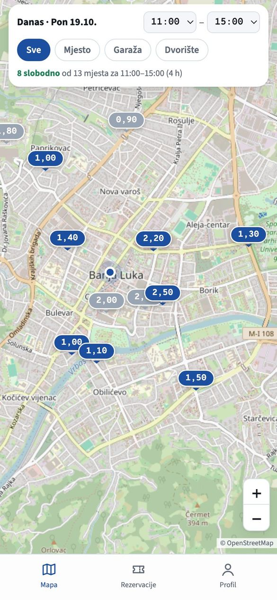
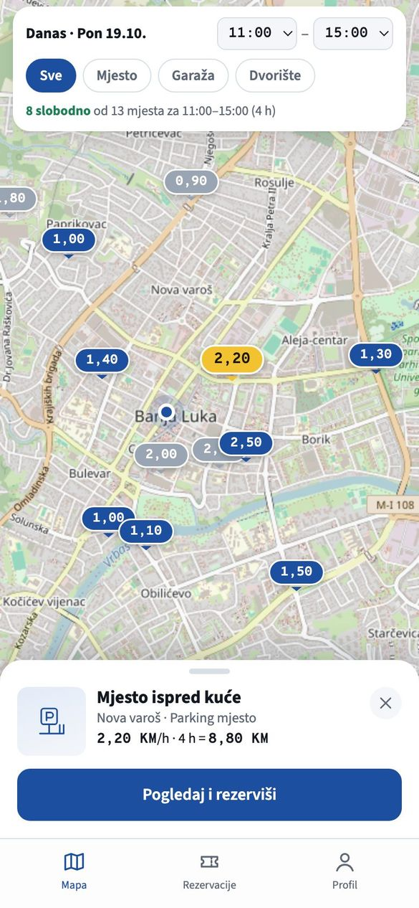
4Vozač: rezerviši i plati
- Na kartici mjesta dodirnite Pogledaj i rezerviši. Vidite opis, pogodnosti, raspored domaćina i obračun (sati × cijena).
- Dodirnite Rezerviši. Na ekranu plaćanja potvrdite registarsku oznaku i izaberite način plaćanja: Apple Pay na iPhoneu, Google Pay na Androidu, ili platnu karticu preko sigurne forme provajdera plaćanja.
- Nakon plaćanja dobijate potvrdu sa šifrom rezervacije (npr. PK-D22B), a domaćin obavještenje.
Iznos se pri rezervaciji samo rezerviše na kartici, a naplati kad termin počne. Otkazivanje je besplatno do 1 sat prije početka termina.
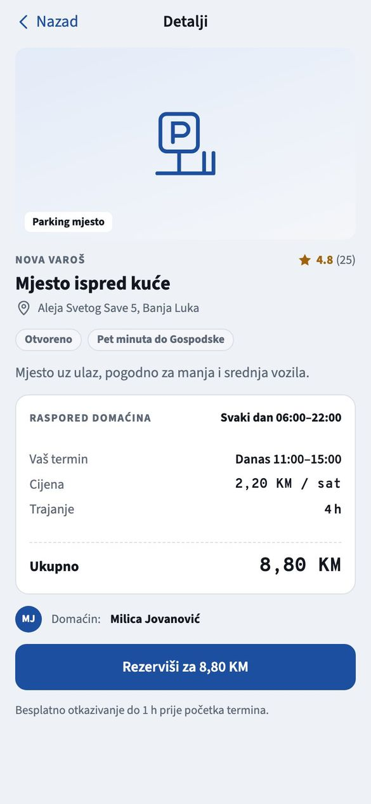
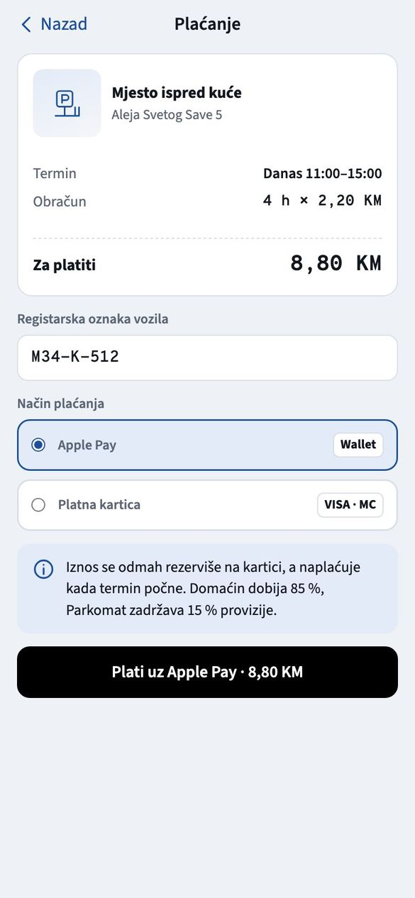
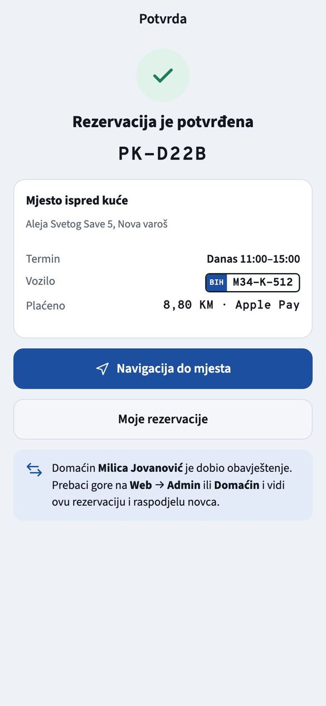
5Vozač: produženje i otkazivanje
U meniju Rezervacije su aktivne i ranije rezervacije. Otvorite jednu da vidite detalje:
- Navigacija do mjesta u pravoj aplikaciji otvara Google Maps ili Apple Maps sa rutom.
- Produži 1 h produžava termin i doplaćuje sat, ali samo ako je mjesto i tada slobodno i u rasporedu domaćina. Sistem ne dozvoljava preklapanje sa tuđom rezervacijom.
- Otkaži rezervaciju: više od 1 sat prije početka vraća se cijeli iznos, kasnije pola iznosa.
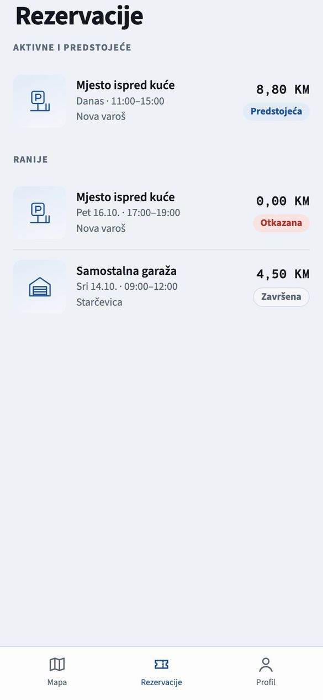
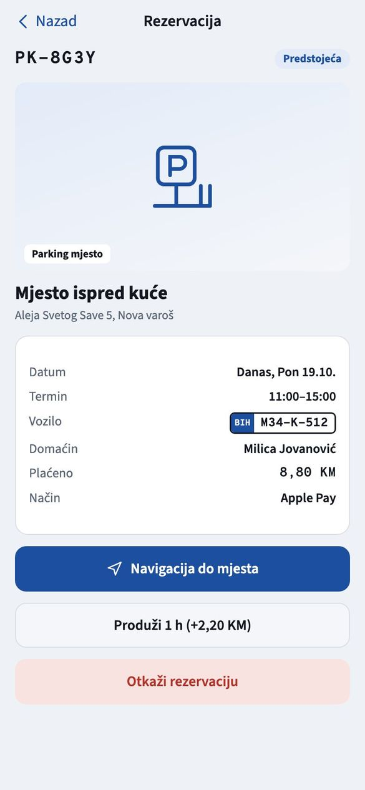
6Domaćin: oglasi svoje mjesto
Isti nalog može i parkirati i izdavati. U Profil izaberite režim Domaćin. Meni se mijenja u Mjesta, Rezervacije, Zarada i Profil.
- U Moja mjesta su vaši oglasi sa cijenom, rasporedom i sljedećom rezervacijom. Prekidač desno pauzira oglas i skida ga sa mape.
- Dugme + (na Androidu Dodaj mjesto) pokreće dodavanje u 3 koraka:
- Prostor i lokacija: tip, naziv, adresa i tačna lokacija dodirom na mapu.
- Kada je slobodno: brzi izbor (radnim danima od 8 do 17, svaku noć, uvijek) ili ručno dani i sati.
- Cijena i opis: cijena po satu, uputstvo za vozača (npr. kako se otvara kapija) i fotografija.
- Nakon Objavi oglas prebacite se nazad na režim Vozač: novo mjesto je već na mapi.
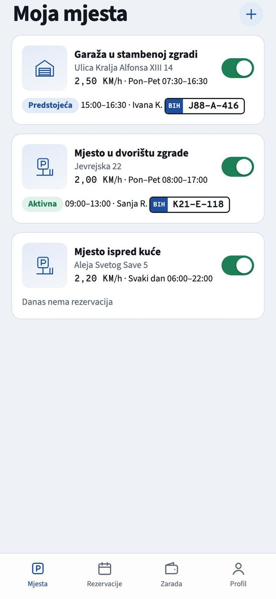
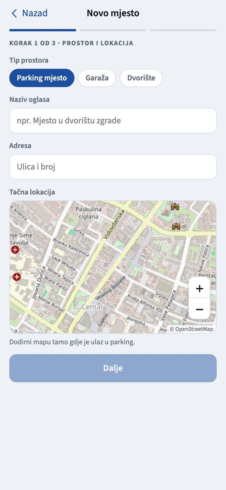
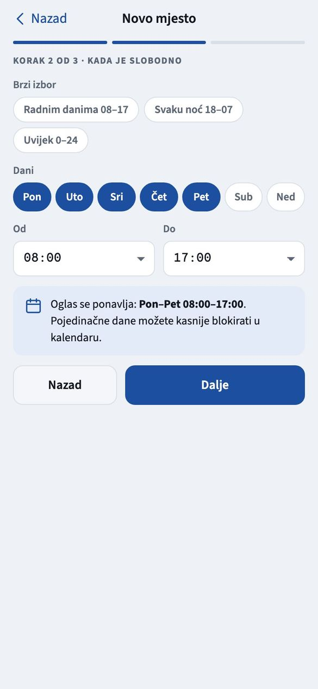
7Domaćin: zarada i isplate
U Zarada domaćin vidi iznos za isplatu, kako se dijeli zadnja uplata i istoriju isplata.
- Od svake uplate domaćin dobija 85 %, a Parkomat zadržava 15 % provizije.
- Naknadu provajdera plaćanja plaća Parkomat iz svoje provizije, pa domaćin uvijek dobija punih 85 %.
- Isplata ide svakog ponedjeljka na račun domaćina, za završene rezervacije. Iznos predstojećih rezervacija čeka dok termin ne prođe.
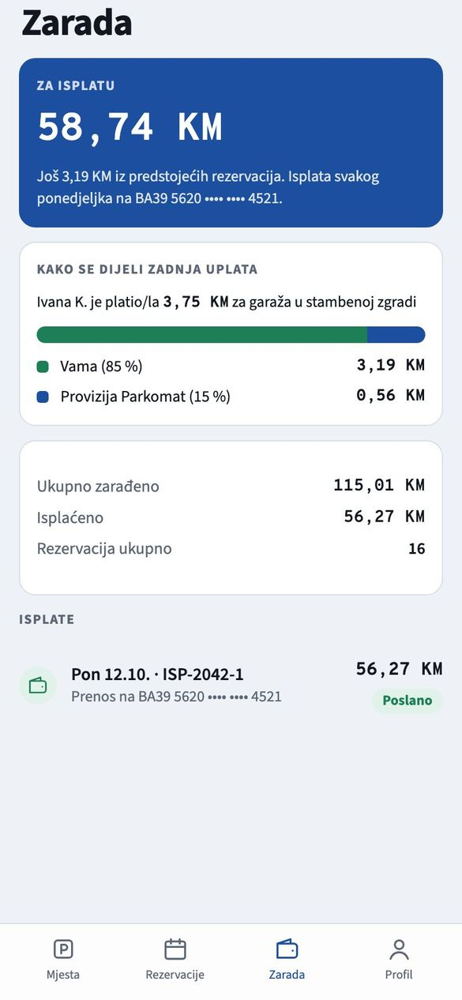
8Razlike na Androidu
Funkcije su iste, a izgled prati Android: zaobljena pretraga, donji meni sa označenom ikonom, plutajuće dugme Dodaj mjesto kod domaćina i Google Pay umjesto Apple Paya. Tako će izgledati i prave aplikacije: svaka u stilu svog sistema, sa istim podacima iza sebe.
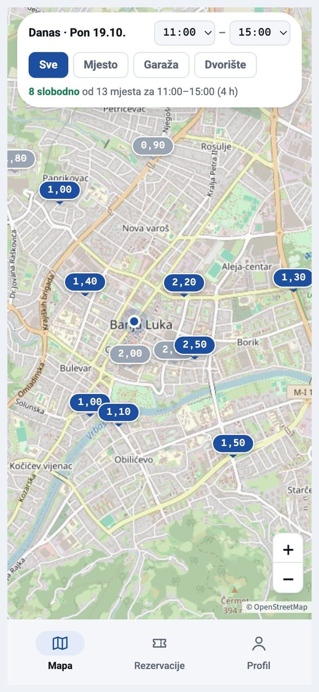
9Web verzija za računar
Izaberite gore Web. Prikazan je sajt u pregledniku, sa menijem Pronađi parking, Moje rezervacije, Domaćin i Admin. Pretraga ima listu mjesta lijevo i mapu desno. Lista je složena tako da su slobodna i jeftinija mjesta na vrhu. Rezervacija i plaćanje idu kao na telefonu, karticom.
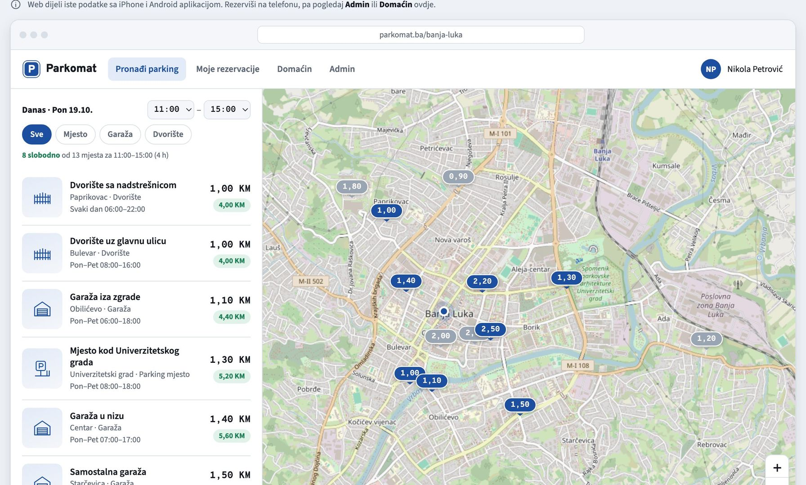
10Admin: novac i isplate
Admin je interni pregled za upravu Parkomata. Ima četiri dijela:
- Pregled: ukupne uplate, provizija, naknade provajdera, neto prihod i obaveze prema domaćinima. Tu je i grafički prikaz kako se dijeli zadnja uplata.
- Transakcije: svaka uplata sa šifrom, vozačem, mjestom, domaćinom, povratom, provizijom i iznosom za domaćina.
- Isplate domaćinima: koliko je ko zaradio, koliko mu je isplaćeno i koliko čeka. Dugme Isplati šalje isplatu, a ona se upisuje u istoriju.
- Mjesta: svi oglasi na platformi i njihov status.
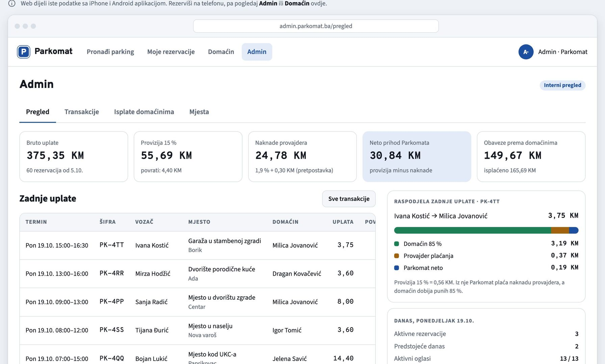
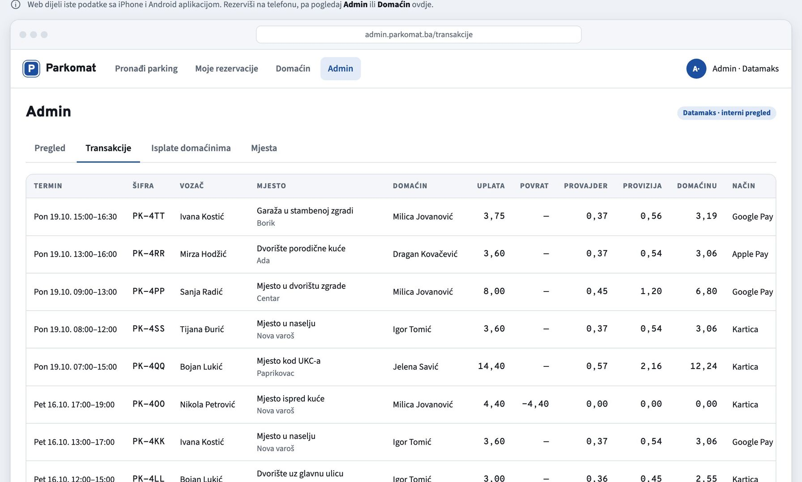
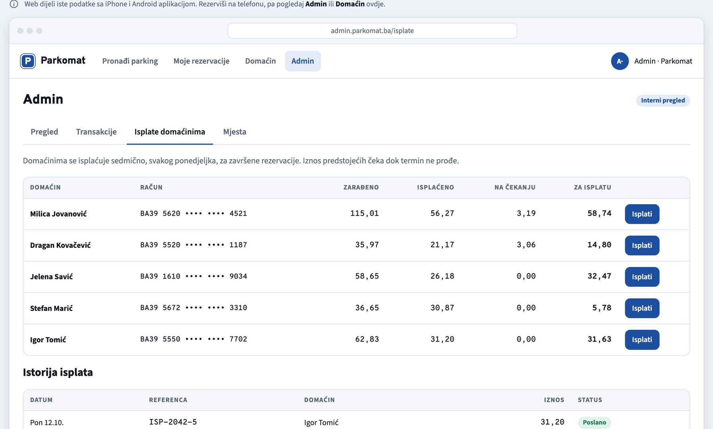
11Probajte cijeli tok za 3 minute
- Na računaru izaberite iPhone. Na mapi dodirnite plavu cijenu i rezervišite mjesto preko Apple Paya.
- Izaberite Web, pa Admin. Vaša uplata je prva u listi zadnjih uplata, podijeljena na domaćina i proviziju.
- U webu otvorite Domaćin i u polju Demo domaćin izaberite vlasnika tog mjesta: vidi se nova rezervacija i zarada.
- Izaberite Android, pa Profil i Domaćin. Dodajte novo mjesto u 3 koraka.
- Vratite se na režim Vozač: vaše novo mjesto je na mapi i može se rezervisati.
- Kliknite Reset demo da sve vratite na početak.
12Šta je demo, a šta puna verzija
| U prototipu | U punoj verziji |
|---|---|
| Plaćanje je simulirano, novac se ne skida. | Stvarna naplata karticom, Apple Payom i Google Payom preko provajdera plaćanja, sa 3-D Secure provjerom. |
| Podaci se pamte samo u vašem pregledniku. | Centralna baza: svi korisnici vide iste, ažurne podatke. |
| Navigacija samo prikazuje poruku. | Otvara Google Maps ili Apple Maps sa rutom do mjesta. |
| Mapa je OpenStreetMap. | Google ili Apple mape, pretraga po adresi i trenutna lokacija korisnika. |
| Obavještenje domaćinu je poruka na ekranu. | Push obavještenja na telefonu, mail i SMS po potrebi. |
| Isplata domaćinu je dugme u adminu. | Sedmične isplate na račun domaćina, sa evidencijom i izvještajima. |
| Fotografija mjesta je ilustracija. | Prave fotografije koje domaćin snimi telefonom. |